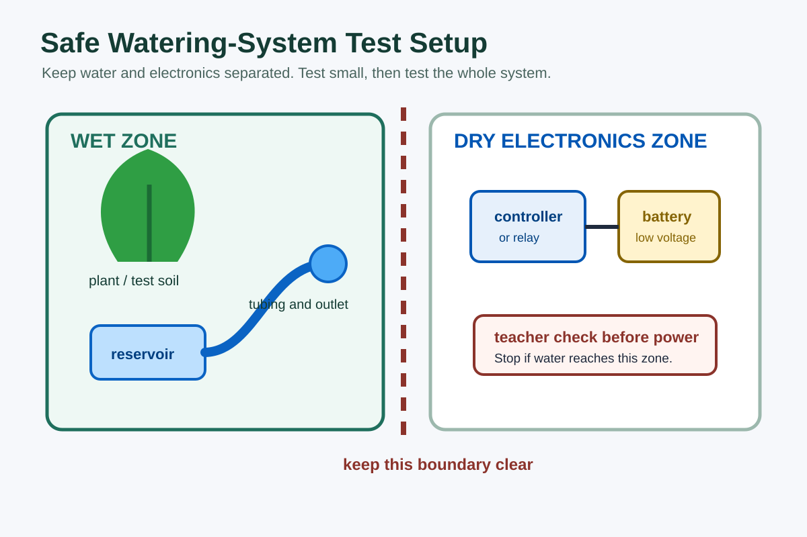

Interpret the design brief: Identify the user need, system purpose, constraints and success criteria.
Create system layouts: Plan the garden bed, reservoir, tube path, outlet, wet zone and dry electronics zone.
Plan control logic: Connect inputs, process, outputs and feedback to a clear watering decision.
Select components: Choose suitable sensors, switches, pumps, valves, indicators and control hardware.
Develop build sequences: Plan safe assembly steps so the water path, wiring and testing can be completed without chaos.
Produce folio evidence: Create concept sketches, diagrams, material lists, risk controls and a planned testing method before building.
Timing: Complete Toolkit 3 planning before building the final prototype in Toolkit 4. A rushed plan usually becomes a wet bench, a dead circuit, and a very educational mess.
Understanding the Design Brief
Before sketching, turn the brief into a checklist. A good design does not just move water. It solves the watering problem safely, consistently and with evidence you can explain.
User need: What does the garden, plant or user actually need the system to do?
Watering condition: What tells the system that watering should start or stop?
Constraints: Available components, low-voltage power, safe water handling, class time, bench space and teacher-approved tools.
Success criteria: The system responds correctly, delivers water to the target area, avoids major leaks and can be tested repeatedly.
Evidence: The folio must show design thinking, not just a photo of the final build looking vaguely hopeful.
Design Tip: Write the brief as an if/then problem. For example: if the soil is dry and the tank has water, the system should water the garden for a controlled time or until the sensor reading changes.
Concept Design and Layout
Create at least two concept options before choosing the final layout. Different options should change something meaningful, such as sensor position, tubing route, reservoir placement or level of automation.
1. Water Path Layout
Reservoir: Place the water source where it is stable, visible and easy to refill without wetting electronics.
Tubing route: Keep tubes short, supported and free from sharp bends or kinks.
Outlet: Aim water at the plant/garden area, not at the bench, wires or someone else's shoes.
Leak points: Mark joins, bends and fittings that need checking during testing.
2. Wet and Dry Zones

Separate water from electronics in the design stage. Do not leave safety to the end when everything is already cable-tied into a nervous little sculpture.
Mark the wet zone: reservoir, tubing, pump, outlet and catch tray.
Mark the dry zone: battery, controller, wiring joins, switches, breadboard and indicators.
Plan how components will be fixed down so they do not move during testing.
Show where hands can safely access switches, resets and test controls.
3. Compare Options
Choose the strongest concept by comparing function, safety, reliability, build difficulty and evidence quality.
Design Choice
What to Compare
Good Evidence
Sensor position
Close to outlet, centre of soil, edge of tray or controlled test sample.
Reason for placement and expected response during dry/wet tests.
Water delivery
Single outlet, drip line, spray point or tube with holes.
Sketch showing flow direction and target watering area.
Control type
Manual, timed, semi-automatic or sensor-based automatic control.
IPO diagram and flowchart explaining when the output starts and stops.
Safety layout
Distance between water and electronics, fixing method, power access and testing setup.
Annotated wet/dry zone diagram and risk control table.
Control Plan
Your control plan explains how the system decides what to do. It should match Toolkit 2 language: input, process, output and feedback.
Choose Your Input
Moisture sensor: Waters when the soil or test sample is dry.
Rain sensor: Prevents watering when water is already detected.
Switch or button: Gives manual control for testing, reset or override.
Timer: Runs the pump or valve for a fixed period.
Water level input: Protects the pump if the reservoir is too low.
Choose Your Process
Microcontroller: Uses code and thresholds to control outputs.
Relay or transistor circuit: Lets a low-current signal switch a higher-current pump or valve.
Timer circuit: Controls duration when the design does not need full sensor feedback.
Teacher-provided board: Follow the approved wiring and explain the decision logic in your folio.
Choose Your Output
Pump: Moves water from the reservoir through tubing.
Solenoid valve: Opens or closes a water path.
LED indicator: Shows dry soil, watering, low tank or fault states.
Buzzer: Warns when the system needs attention.
Basic control rule: If soil is dry, the tank has water and rain is not detected, turn watering on. If soil is wet, the tank is low or rain is detected, keep watering off.
Circuit, Materials and Component Planning
A strong plan shows what each part does and how it will be connected safely. Keep the plan simple enough to build and test in class.
Required Planning Evidence
Component list: Name each part, quantity, purpose and any safety note.
Wiring/circuit plan: Show power, input, controller/process, output and switching device if used.
Irrigation layout: Show reservoir, pump or valve, tube path, outlet, target garden area and catch tray.
Fixing plan: Explain how parts will be mounted so water, wiring and moving parts stay controlled.
Risk controls: Identify hazards for water, low-voltage electricity, cutting, drilling, hot glue and wet testing.
Component Selection Questions
Does this part suit the job, or is it impressive but unnecessary?
Can the output be powered safely by the controller, or does it need a relay, transistor or driver?
Can the sensor be tested under repeatable dry/wet conditions?
Can another student understand the diagram without you standing there translating it?
Build Sequence Planning
Write the build sequence before construction starts. This is not busywork. It is how you avoid rebuilding the whole thing because one tube had to go underneath a wire you already glued down.
Confirm the brief: Check the approved components, success criteria and teacher safety expectations.
Prepare the base: Mark the garden area, reservoir position, wet zone and dry electronics zone.
Build the water path: Install reservoir, pump or valve, tubing and outlet. Test for leaks without powering the electronics.
Build the input circuit: Connect and test the sensor, switch or timer separately.
Build the output circuit: Connect and test the pump, valve or indicator separately using teacher-approved power.
Connect the process: Join input, controller/process and output after teacher checking.
Run subsystem tests: Test one section at a time and record results.
Run full-system tests: Check dry, wet, rain/no rain and low-tank conditions where relevant.
Improve and document: Change one thing at a time and record faults, fixes and results.
Activities & Evidence
1) Design Brief Analysis
Summarise the watering problem, user need and success criteria.
Create a checklist of project constraints and teacher safety requirements.
2) Concept Sketches
Create at least two different garden watering layout options.
Annotate sensor position, reservoir, water path, wet zone, dry zone and output.
Compare the options and justify the chosen design.
3) Final Design Package
Create a final irrigation layout with labels and dimensions where useful.
Create an input-process-output diagram and control flowchart or pseudocode.
Create a wiring/circuit plan showing power, input, process, output and any relay/driver.
Prepare a component list, tool list, build sequence and risk control table.
4) Teacher Check-in
Submit concept sketches, final layout, circuit/control plan and testing method before construction.
Get teacher feedback before cutting, fixing parts or powering the system.
Portfolio Checklist
Project brief summary and success criteria.
Research notes about real irrigation or automated watering systems.
Input-process-output diagram with feedback labelled where relevant.
Two concept sketches and one final chosen design.
Irrigation layout showing reservoir, tube path, outlet and garden area.
Wiring/circuit plan showing power, input device, controller/process and output device.
Algorithm, flowchart or pseudocode showing start, stop and fault conditions.
Materials/component list with quantities and purpose.
Build sequence and risk controls for water, electricity and tools.
Planned testing method ready for Toolkit 4.
Design Planning Q&A
Why should the wet zone and dry zone be shown on the design plan?
The wet zone and dry zone show how the design keeps water away from electronics, wiring joins and power sources. This improves safety and makes faults easier to trace during testing.
What makes a concept sketch useful for this project?
A useful concept sketch labels the reservoir, tube path, outlet, sensor, controller, output and wet/dry zones. It also includes notes explaining why the layout should work.
Why is a flowchart or pseudocode needed before building?
The flowchart or pseudocode explains the system decision before parts are connected. It shows when watering starts, when it stops and what should happen during fault conditions such as rain or a low tank.
What should be included in the final design package?
The final design package should include the chosen layout, IPO diagram, circuit or wiring plan, algorithm, component list, risk controls, build sequence and planned testing method.
How do you justify the strongest design option?
Compare the options against the brief. A strong justification explains why the chosen design is safer, more reliable, easier to build, easier to test, better at saving water or better suited to the available components.